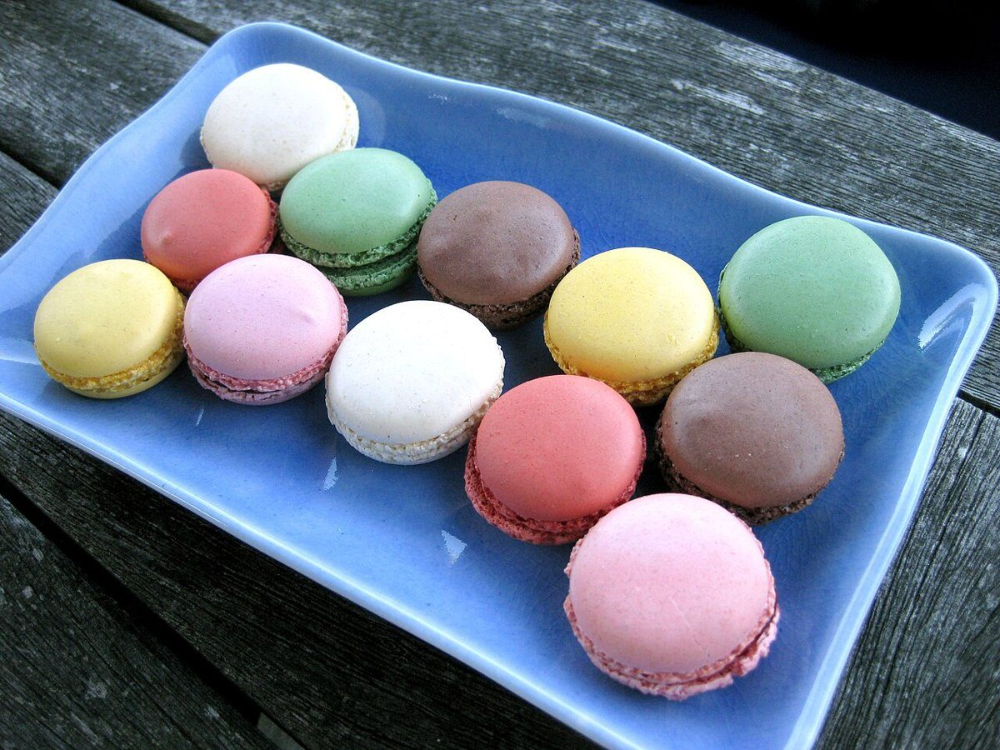

制作側の連想
「FAVORI」から、ハートを思い浮かべた。
店名の由来は分かりません。制作側は「FAVORI」という響きから「お気に入り」を連想し、お気に入りボタンの「♡」が少しずつ塗りつぶされて「♥」になっていく様子を、このサイトの作りにしました。5つのページを順にめくると、ハートが0%から100%まで満ちていきます。お店の理念・由来とは無関係の、制作側の連想です。
- ホーム 0%
- 店のこと 25%
- メニュー 50%
- 口コミ 75%
- アクセス 100%
かたちあそび(イメージ)
ハートに見えなくもない、ものたち。
写真はお店のものではありません。形や色のイメージで選んだ、国外・撮影地不明のフリー素材です。




ご案内
お店のこと(確認できたものだけ)
| 所在地 | 〒573-0031 大阪府枚方市岡本町７−１ |
|---|---|
| 電話 | 072-300-2078 |
| 営業時間 | 準備中 |
| 定休日 | 準備中 |
| ご予約 | 準備中 |
| 駐車場 | 準備中 |
| SNS | Instagram @plattofavori |